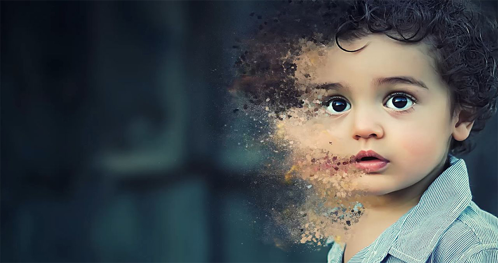

大鱼海棠粒子特效
为模拟现实中的水、火、雾、气等效果由各种三维软件开发的制作模块，原理是将无数的单个粒子组合使其呈现出固定形态，借由控制器，脚本来控制其整体或单个的运动，模拟出现真实的效果。
粒子特效技术是一种新兴的技术，它是利用特效软件来模拟现实中逼真的效果。随着计算机图形图像技术和影视动画创作的发展，粒子特效技术被广泛的应用于影视动画之中

影视粒子特效
由于粒子特效可以制造出大量现实中并不存在的物体形象，因此，粒子特效的应用大大丰富了影视动画场景的造型。粒子特效（子弹、碎石）在场景中的运用，与场景中的节奏、灯光等各方面都进行了相应的配合，让场景展示时更具有艺术感。 在一部影视动画中，这种危机感特殊的表现效果，以及场景结构的复杂多变，往往需要粒子特效来营造，通过粒子特效合理地表达出层次感。
粒子特效的使用
在电影动画中，粒子特效已经成为综合性艺术的有机组成部分，作为一门独立学科，真正走上了快速发展之路。粒子系统有丰富的自然物理现象和空间扭曲、模仿的优势。 在影视动画中，粒子特效可以很好地烘托角色，能使角色的内心情感与场景气氛很好地融合在一起。
3D影视动画是CG技术发展到一定阶段的必然产物，镜头语言的运用也会
让观众形成不一样的心理感受。比如设计师在设计角色动作与制作语言镜头
的时候，把卡通角色塑造得栩栩如生，再通过计算机后期处理加上光影和粒
子特效，完全把观众带入动画这个多彩的世界。如在美国动画电影《汽车总
动员》中把汽车拟人化，加上丰富的表情动作，把虚幻的逼真效果描绘得惟
妙惟肖。观众对这些亦真亦幻的动画片产生的心理感受无疑是极其深刻的，
同时，也增强了观众作为受众群体对动画衍生产品的关注。